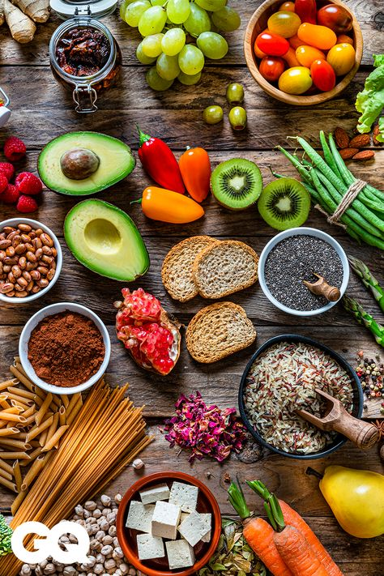
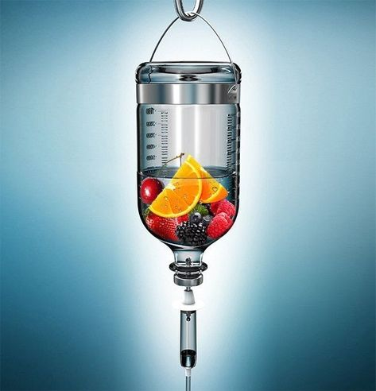
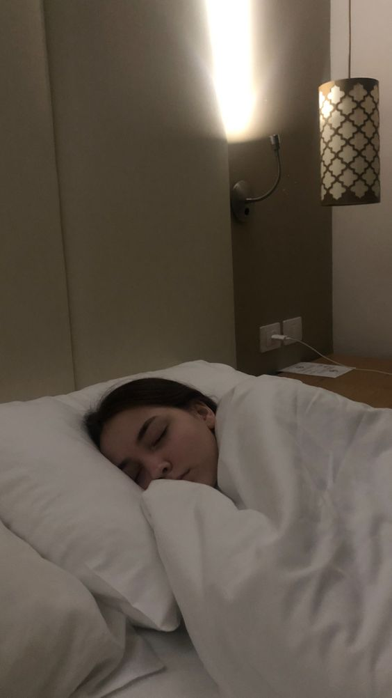

Latest Medical News
The Importance of Nutrition for Health
Published on: October 30, 2024Nutrition plays a crucial role in maintaining overall health and wellness. A balanced diet, rich in vitamins and minerals, can prevent chronic diseases, enhance immune function, and improve mental health. Incorporating a variety of fruits, vegetables, whole grains, and lean proteins is essential for optimal health.
Read More
How Regular Exercise Benefits Mental Health
Published on: October 29, 2024Recent studies highlight the positive effects of regular exercise on mental health. Engaging in physical activity releases endorphins, which can alleviate symptoms of anxiety and depression. Moreover, exercise can improve cognitive function and promote better sleep, contributing to overall mental well-being.
Read MoreHealthy Eating Tips for a Balanced Diet
Published on: October 28, 2024Eating a balanced diet is key to maintaining health. Focus on whole foods, limit processed items, and ensure your meals include a mix of macronutrients: carbohydrates, proteins, and fats. Planning your meals and keeping healthy snacks on hand can also help you make better food choices throughout the day.
Read More The Role of Hydration in Health
Published on: October 27, 2024Staying hydrated is essential for maintaining good health. Water plays a vital role in nearly every bodily function, from regulating body temperature to aiding digestion. It is recommended to drink at least eight 8-ounce glasses of water a day, adjusting based on activity levels and climate.
Read More
Effective Stress Management Techniques
Published on: October 26, 2024Managing stress is vital for maintaining mental health. Techniques such as mindfulness, deep breathing exercises, and regular physical activity can help reduce stress levels. It is important to find healthy outlets for stress, such as hobbies or social activities, to enhance overall well-being.
Read More The Importance of Sleep Hygiene
Published on: October 25, 2024Good sleep hygiene is essential for quality sleep and overall health. Establishing a consistent sleep schedule, creating a restful environment, and avoiding screens before bedtime can improve sleep quality. Prioritizing sleep is crucial for physical and mental well-being.
Read More